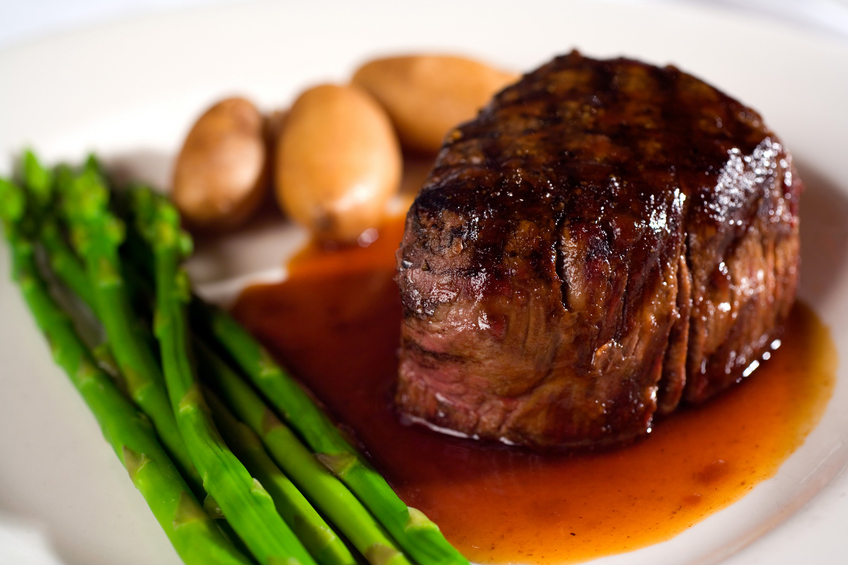
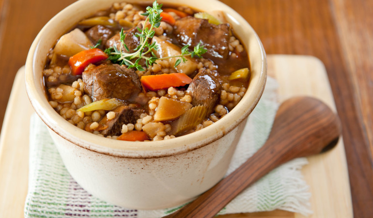
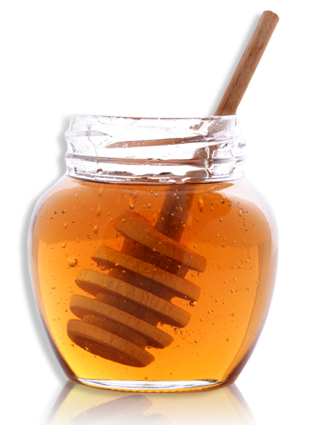

Alberta Food and Drink
Alberta's prairie is ideal for cattle rearing and its Western beef is world famous.
Apart from traditional foods, Alberta's towns and cities offer an excellent range of international
cuisine. Alcohol is sold in 'liquor stores', although beer may be obtained in many hotels.
Specialities:
- Beef is barbecued, braised, grilled, minced and skewered with different complements such as onions,
mushrooms, green peppers, rice, sauces and beans; Alberta beef is renowned worldwide and is
extraordinarily succulent.
- Stew (combination of diced steak, garden vegetables and biscuits cooked in rich gravy).
- Wild berries and nuts are used in desserts.
- Honey is made from alfalfa and clover nectar and is a widely used sweetener and breakfast food.



Alberta Beef Stew
Serving Size : 8
1/4 cup all-purpose flour
1 1/2 teaspoons salt
1 teaspoon garlic powder
1/2 teaspoon pepper
pinch cayenne pepper
3 pounds boneless blade pot roast -- cut into 1 1/2-inch cubes
2 tablespoons vegetable oil
2 large onions -- sliced
1 pound shiitake or button mushrooms -- sliced
1/4 cup tomato paste
1 tablespoon packed dark brown sugar
1 teaspoon dried marjoram
1 teaspoon oregano
1 teaspoon thyme
pinch cinnamon
3 cups beef stock
1 cup red wine
2 large potatoes
1/4 large rutabaga
1 12 oz pkg baby carrots
In large resealable plastic bag, combine flour, salt, garlic powder, pepper and cayenne pepper. Add beef in batches, shaking to coat.
In large Dutch oven, heat 1 tbsp of the oil over medium-high heat; brown beef in batches, adding remaining oil as needed. Set aside.
In same pot, cook onions and mushrooms, stirring often, for about 5 minutes or until onions are softened. Add tomato paste, sugar, marjoram, oregano, thyme and cinnamon;
cook for 1 minute. Add beef stock and wine; bring to boil, stirring to scrape up any brown bits on bottom of pot. Return beef and any accumulated juices to pot; cover
and simmer for 2 hours.
Peel potatoes and rutabaga; cut into 1 1/2-inch cubes. Stir into pot, along with carrots. Cover; simmer for 30 minutes or until beef and vegetables
are tender.
iced lemon honey ginger "tea"
Makes about 7 cups
1 piece fresh gingerroot (4-inches long)
6 cups water
1/2 cup honey
1/2 cup sugar
zest of 2 lemons (removed with a vegetable peeler)
1 cup fresh lemon juice
Lemon slices (for garnish)
Peel gingerroot and cut crosswise into thin slices. In a medium saucepan boil 6 cups water, gingerroot, honey, sugar and zest,
stirring until sugar is dissolved. Remove pan from heat and steep "tea", covered, 45 minutes.
Uncover tea and cool completely. Remove gingerroot and zest with a slotted spoon and discard. Transfer tea to a pitcher and stir
in lemon juice. Chill tea, covered, until cold and up to 2 days.
Serve tea over ice in tall glasses and garnish with lemon slices.